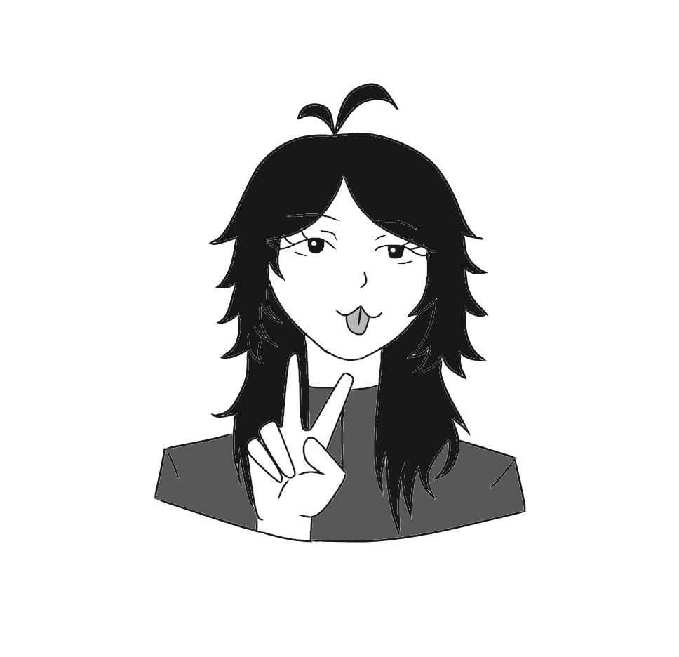

✦ ✦ About the Website and the Web Creator ✦ ✦
Nya Awrts is a cat-themed website focused on creativity and simple web design. It was created as a project in school to learn how websites are built using HTML, CSS, and JavaScript which i really enjoyed (lies). The design is inspired by cats, especially their cute and playful “:3” style (favorite emote >:3). The website is not just about cats, but also about the process of building it and learning how to code a website.
It may not be perfect, but I’m proud of it because it shows my progress and effort in learning web development. Every part of this website was made while exploring HTML, CSS, and JavaScript for the first time.
I am still a beginner, so some parts might be simple or not fully polished yet, but I am improving step by step.
Hello everyone who is visiting this website! This is Anya, the creator of this website. Thank you for viewing it and for being here.
This is not really my hobby, but I created this website as a school project. It is my first time making a website, and I am still learning how to code.
About the website, as you can see, it is designed with a cat theme. However, it is not just about cats. It also includes a to-do list planner where you can add your tasks, as well as motivational quotes in a cat-inspired style.
This website also serves as a small portfolio about me as a beginner web creator, showing my learning progress in HTML, CSS, and JavaScript.